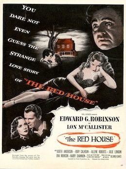
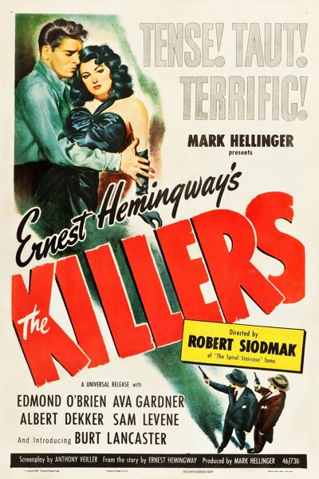
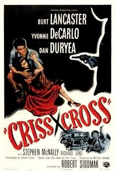

THE STANFORD THEATRE
Now Showing
·
Upcoming
·
Past
·
Search
September 6 - November 10, 2024
Film Noir plus Val Lewton
19 bills
September 6 - 8
The Big Sleep (1946)
114 min
The Maltese Falcon (1941)
101 min
September 12 - 13
Cat People (1942)
73 min
The Woman in the Window (1944)
99 min
September 14 - 15
Double Indemnity (1944)
107 min
Mildred Pierce (1945)
111 min
September 19 - 20
The Leopard Man (1943)
66 min

The Red House (1947)
100 min
September 21 - 22
Gun Crazy (1950)
87 min
Scarlet Street (1945)
103 min
September 26 - 27
The Body Snatcher (1945)
77 min
The Glass Key (1942)
85 min
September 28 - 29
Sunset Boulevard (1950)
110 min
Nightmare Alley (1947)
110 min
October 3 - 4
Bedlam (1946)
79 min
Secret Beyond the Door (1947)
99 min
October 5 - 6
The Third Man (1949)
93 min
Key Largo (1948)
100 min
October 10 - 11
The Seventh Victim (1943)
71 min
Angel Face (1952)
91 min
October 12 - 13
High Sierra (1941)
100 min
This Gun for Hire (1942)
80 min
October 17 - 18
Isle of the Dead (1945)
71 min
The Spiral Staircase (1946)
83 min
October 19 - 20
Laura (1944)
88 min
Out of the Past (1947)
97 min
October 24 - 25
The Curse of the Cat People (1944)
70 min
Night of the Hunter (1955)
89 min
October 26 - 27
The Blue Dahlia (1946)
96 min

The Killers (1946)
103 min
October 31 - November 1
I Walked with a Zombie (1943)
68 min
Ministry of Fear (1944)
83 min
November 2 - 3
Touch of Evil (1958)
93 min
Sudden Fear (1952)
100 min
November 7 - 8
The Ghost Ship (1943)
69 min
Phantom Lady (1944)
87 min
November 9 - 10
The Postman Always Rings Twice (1946)
103 min

Criss Cross (1949)
88 min
Archived
•
StanfordTheatre.org Original